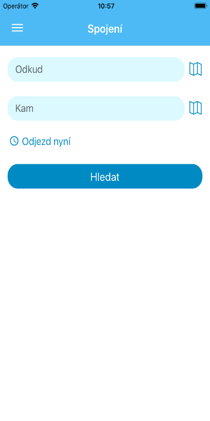
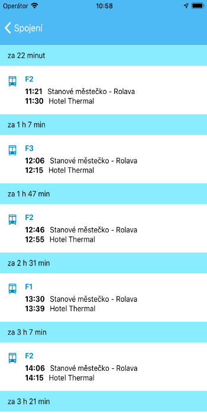
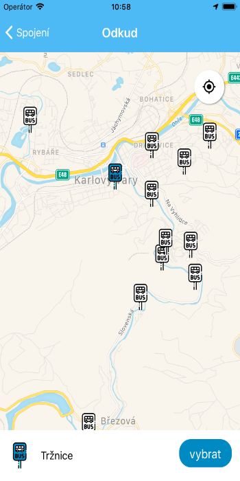

Aplikace umožňuje snadno vyhledávat spojení mezi zastávkami v rámci autobusové festivalové dopravy v Karlových Varech.
Funkce aplikace:
- vyhledání spojů mezi dvěma zastávkami
- spoje jsou řazeny podle
nejdřívějšího času odjezdu
- výběr zastávky z mapy
- zobrazení
vaší polohy na mapě
- funguje i OFFLINE